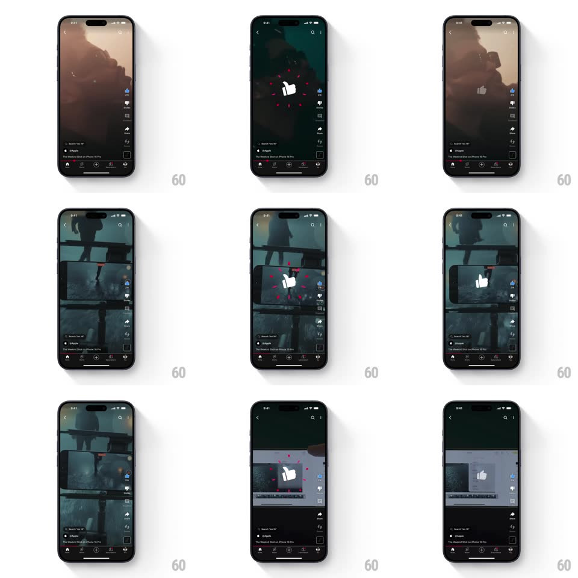

Media
Frame-by-frame

Rebuild this interaction 1:1: YouTube Shorts' like burst - tapping the thumbs-up in the Shorts action rail fires a big springy thumbs-up badge at screen center with radiating red particle sparks, while the rail icon fills.

Rebuild this interaction 1:1: YouTube Shorts' like burst - tapping the thumbs-up in the Shorts action rail fires a big springy thumbs-up badge at screen center with radiating red particle sparks, while the rail icon fills. ## Integration Integration: stack-agnostic spec - springs given as stiffness/damping, timed motions as duration + curve; map every value to your framework and animation library of choice. ## Scene The dark Shorts player (full-bleed vertical video, right action rail: like with count, dislike, comments, share, remix; title and channel rows at bottom-left). On like, a large white thumbs-up glyph appears center-screen over the video with red spark shards around it. ## Motion spec Pattern: celebratory center burst + rail fill. - Tap like: the rail thumb pops (scale 1 -> 1.3 -> 1, spring ~500/18) and fills solid; the count ticks. - Simultaneously the center badge spawns: the white thumbs-up scales in from 0 with a hard spring (~520/16, pronounced overshoot, 350ms) and a slight rotate (-8deg -> 0). - Red spark shards (8-10 small strokes/dots) burst outward radially from the badge (translate 60-90pt, fade, 400ms, slight per-shard stagger). - The badge holds ~500ms, then shrinks away (scale -> 0.6 with fade, 200ms, ease-in) while the sparks finish dissipating. - Unlike: only the rail pop runs (smaller, 1 -> 0.85 -> 1) and the fill clears - no center burst. ## Calibration - The center burst is fast and gone inside a second - celebration, not interruption; the video never pauses. - The rail icon and center badge fire on the same tap frame - one cause, two effects. ## Reduced motion Rail fill with a crossfade only; no center badge or sparks. ## Don't miss - The sparks are red on-brand strokes, not generic confetti. - The badge casts no shadow - it floats flat over the video like a sticker.